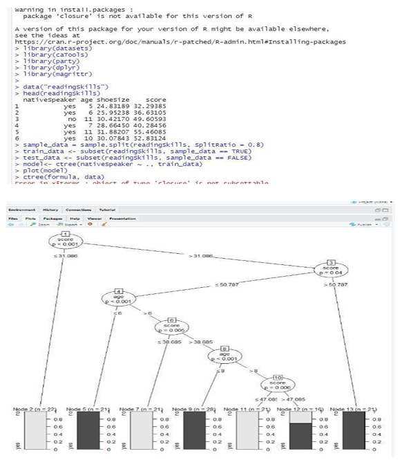

To classify the new instance (new sample) to a target data (grape fruit or orange) using decision tree algorithm in R Studio.
o Install the necessary package in R Studio such as “rpart” and “rpart.plot”
o Set the current working directory
o Save the dataset in the current working directory
o Read the dataset in the form of csv file using read.csv ()
o Finally create the decision tree and predict the category for the new instance.
library(datasets)
library(caTools)
library(party)
library(dplyr)
library(magrittr)
data("readingSkills")
head(readingSkills)
sample_data = sample.split(readingSkills, SplitRatio = 0.8)
train_data <- subset(readingSkills, sample_data == TRUE)
test_data <- subset(readingSkills, sample_data == FALSE)
model<- ctree(nativeSpeaker ~ ., train_data)
plot(model)
ctree(formula,data)
